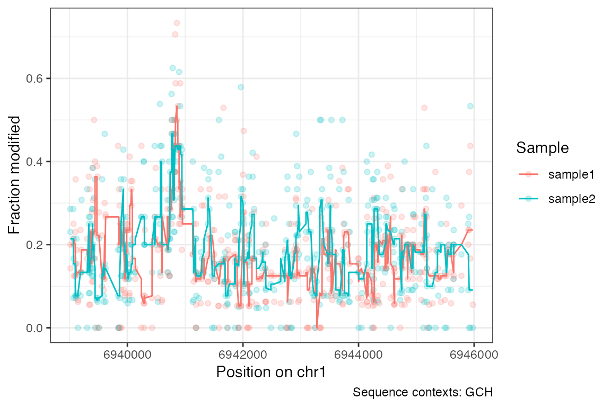

footprintR provides tools for working with
single-molecule footprinting data in R. These include functions for
reading collapsed or read-level data from files generated by modkit and
representation of such data as R objects, functions to manipulate such
objects and for visualization..
Current contributors include:
footprintR can be installed from GitHub via the
BiocManager package:
if (!requireNamespace("BiocManager", quietly = TRUE))
install.packages("BiocManager")
BiocManager::install("fmicompbio/footprintR")Here is a minimal example for using footprintR that
illustrates its functionality. We start by loading the package:
The example is using small experimental datasets that are provided as part of the package. Here we get the file names for this data:
# collapsed 5mC data for a small genomic window in BedMethyl format
bedmethylfiles <- system.file("extdata",
c("modkit_pileup_1.bed.gz",
"modkit_pileup_2.bed.gz"),
package = "footprintR")
# file with sequence of the reference genome in fasta format
reffile <- system.file("extdata", "reference.fa.gz", package = "footprintR")This allows us to read the data using
readBedMethyl():
names(bedmethylfiles) <- c("sample1", "sample2")
se <- readBedMethyl(bedmethylfiles,
sequence.context = 3,
sequence.reference = reffile)
se
#> class: RangedSummarizedExperiment
#> dim: 12020 2
#> metadata(0):
#> assays(2): Nmod Nvalid
#> rownames: NULL
#> rowData names(1): sequence.context
#> colnames(2): sample1 sample2
#> colData names(0):This kind of collapsed data (where individual reads have been
combined per genomic position) is read into a
RangedSummarizedExperiment object. The rows here correspond
to genomic positions:
rowRanges(se)
#> UnstitchedGPos object with 12020 positions and 1 metadata column:
#> seqnames pos strand | sequence.context
#> <Rle> <integer> <Rle> | <DNAStringSet>
#> [1] chr1 6937686 + | GCA
#> [2] chr1 6937688 + | ACT
#> [3] chr1 6937689 + | CTT
#> [4] chr1 6937691 + | TAA
#> [5] chr1 6937696 + | GCA
#> ... ... ... ... . ...
#> [12016] chr1 6957049 - | TGG
#> [12017] chr1 6957051 - | CCT
#> [12018] chr1 6957052 - | TCC
#> [12019] chr1 6957056 - | CCT
#> [12020] chr1 6957057 - | CCC
#> -------
#> seqinfo: 1 sequence from an unspecified genome; no seqlengths… and the columns correspond to the different samples (here
corresponding to the names of the two input files in
bedmethylfiles):
colnames(se)
#> [1] "sample1" "sample2"The data is stored in two matrices (assays) called Nmod
(the number of modified bases per sample and position) and
Nvalid (the number of valid total read covering that
position in each sample):
assayNames(se)
#> [1] "Nmod" "Nvalid"
head(assay(se, "Nmod"))
#> sample1 sample2
#> [1,] 1 5
#> [2,] 1 0
#> [3,] 0 0
#> [4,] 0 0
#> [5,] 3 3
#> [6,] 0 0
head(assay(se, "Nvalid"))
#> sample1 sample2
#> [1,] 16 15
#> [2,] 16 15
#> [3,] 0 1
#> [4,] 1 0
#> [5,] 16 14
#> [6,] 1 0From these, you can easily calculate the fraction of modifications:
fraction_modified <- assay(se, "Nmod") / assay(se, "Nvalid")
head(fraction_modified)
#> sample1 sample2
#> [1,] 0.0625 0.3333333
#> [2,] 0.0625 0.0000000
#> [3,] NaN 0.0000000
#> [4,] 0.0000 NaN
#> [5,] 0.1875 0.2142857
#> [6,] 0.0000 NaNPlease note that non-finite fractions result from positions that had zero coverage in a given sample.
Use the plotRegion() function to visualize data for a
specific region (here also selecting for positions with a specific
sequence context, and adding a running median line):
plotRegion(se,
region = "chr1:6939000-6946000",
k.smooth = 7,
sequence.context = "GCH")
sessionInfo()
#> R version 4.4.1 (2024-06-14)
#> Platform: aarch64-apple-darwin20
#> Running under: macOS Sonoma 14.5
#>
#> Matrix products: default
#> BLAS: /Library/Frameworks/R.framework/Versions/4.4-arm64/Resources/lib/libRblas.0.dylib
#> LAPACK: /Library/Frameworks/R.framework/Versions/4.4-arm64/Resources/lib/libRlapack.dylib; LAPACK version 3.12.0
#>
#> locale:
#> [1] en_US.UTF-8/en_US.UTF-8/en_US.UTF-8/C/en_US.UTF-8/en_US.UTF-8
#>
#> time zone: UTC
#> tzcode source: internal
#>
#> attached base packages:
#> [1] stats4 stats graphics grDevices utils datasets methods
#> [8] base
#>
#> other attached packages:
#> [1] SummarizedExperiment_1.35.1 Biobase_2.65.0
#> [3] GenomicRanges_1.57.1 GenomeInfoDb_1.41.1
#> [5] IRanges_2.39.0 S4Vectors_0.43.0
#> [7] BiocGenerics_0.51.0 MatrixGenerics_1.17.0
#> [9] matrixStats_1.3.0 footprintR_0.1.0
#>
#> loaded via a namespace (and not attached):
#> [1] tidyselect_1.2.1 farver_2.1.2
#> [3] dplyr_1.1.4 R.utils_2.12.3
#> [5] Biostrings_2.73.1 bitops_1.0-7
#> [7] fastmap_1.2.0 SingleCellExperiment_1.27.2
#> [9] RCurl_1.98-1.14 GenomicAlignments_1.41.0
#> [11] XML_3.99-0.17 digest_0.6.36
#> [13] lifecycle_1.0.4 magrittr_2.0.3
#> [15] compiler_4.4.1 rlang_1.1.4
#> [17] sass_0.4.9 tools_4.4.1
#> [19] utf8_1.2.4 yaml_2.3.8
#> [21] data.table_1.15.4 rtracklayer_1.65.0
#> [23] knitr_1.47 S4Arrays_1.5.2
#> [25] labeling_0.4.3 curl_5.2.1
#> [27] DelayedArray_0.31.3 abind_1.4-5
#> [29] BiocParallel_1.39.0 withr_3.0.0
#> [31] desc_1.4.3 R.oo_1.26.0
#> [33] grid_4.4.1 fansi_1.0.6
#> [35] beachmat_2.21.3 colorspace_2.1-0
#> [37] ggplot2_3.5.1 scales_1.3.0
#> [39] cli_3.6.3 rmarkdown_2.27
#> [41] crayon_1.5.3 ragg_1.3.2
#> [43] generics_0.1.3 httr_1.4.7
#> [45] rjson_0.2.21 DelayedMatrixStats_1.27.1
#> [47] scuttle_1.15.0 cachem_1.1.0
#> [49] zlibbioc_1.51.1 parallel_4.4.1
#> [51] XVector_0.45.0 restfulr_0.0.15
#> [53] vctrs_0.6.5 Matrix_1.7-0
#> [55] jsonlite_1.8.8 systemfonts_1.1.0
#> [57] jquerylib_0.1.4 glue_1.7.0
#> [59] pkgdown_2.0.9.9000 codetools_0.2-20
#> [61] gtable_0.3.5 BiocIO_1.15.0
#> [63] UCSC.utils_1.1.0 munsell_0.5.1
#> [65] tibble_3.2.1 pillar_1.9.0
#> [67] htmltools_0.5.8.1 GenomeInfoDbData_1.2.12
#> [69] BSgenome_1.73.0 R6_2.5.1
#> [71] textshaping_0.4.0 sparseMatrixStats_1.17.2
#> [73] evaluate_0.24.0 lattice_0.22-6
#> [75] highr_0.11 R.methodsS3_1.8.2
#> [77] Rsamtools_2.21.0 bslib_0.7.0
#> [79] Rcpp_1.0.12 SparseArray_1.5.11
#> [81] xfun_0.45 fs_1.6.4
#> [83] pkgconfig_2.0.3